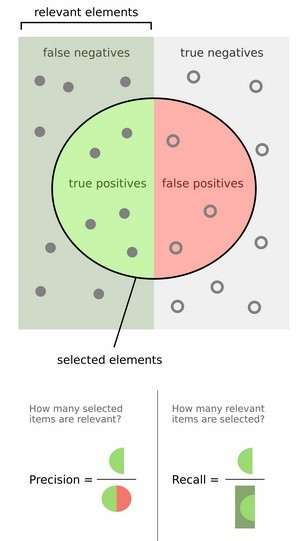

Mean Average Precision（MAP)
Precision&Recall
The formula of precision and recall is:

Precision is used to evaluate the accuracy of test result, which is actually the proportion of true tested result in the total result.
Recall is used to evaluate the quality of the test result, which is actually the proportion of the true tested result in the total true result, that is , including the true tested result and the true non-tested result.
TP, TN, FP, FN
To have a better understanding of precision and recall, we should know the definition of TP, TN, FP and FN.

As the graph indicated, all the data is first divided into two part: positive and negative. They are the annotation that pre-labeled to the data, or you can say it is the ‘ground truth’.
Then after testing, we have another set that is tested by the algorithm, which is the data that the testing algorithm/model thinks positive. It also contains two parts: 1. the algorithm tests right, the data that is indeed positive. 2. the algorithm tests wrong, the data that is actually negative. These two part is just TP and FP, respectively.
There remains two parts in the data that the algorithm doesn’t think positive: 1, the data is positive but is not tested positive. 2. the data is negative but is not tested positive too. They are FN and TN.
A short summarization:
1 | TP: true positive, the data is ground-truth positive and is also tested as positive. |
You may be reminded that the words true/false is adjective.
Labeling based on IoU
We know that the testing in detection is in the form of outputting bounding box, and it is impossible or hard to make the testing box and the ground-truth box to be exactly the same, hence we need the method of IoU to construct labeling, including the labeling of TP, FP, FN. Note that since in detection we do not care about the background, the definition of TN will not be specialized. About IoU, you may see my blog [here](IoU | 流千过客-Ed-P (edwardpei.com)). The output of the algorithm is always based on the IoU score, so we should define a threshold to control the output, i.e. IoU_threshold = 0.5.
Confidence
Before I give the details, we should know the definition of ‘confidence’. Confidence is a quality that measured whether a bounding box containing the gt object and the accuracy of the bounding box.
In YOLO, confidence is defined as:
When the center of the gt is contained in the bounding box, Pr(Object) is 1, or it is 0.
By using confidence, we can compare the bounding boxes for the same gt. It should be noted that in order to make the labeling result to be reasonable, we should count the TP for each gt just once. That is, we may have the probability that there are lots of bounding box have IoU score exceed the threshold. In this case, we only take the bounding box that has the highest confidence (just highest IoU), which is just TP and then other boxes are labeled as FP. So in this way, you should understanding why we just count once for each gt, since if take all the box exceed the threshold as TP, there will have problems: 1. the precision is too cheap, then the precision will very high, then it will lose the authority of measuring the accuracy. 2. the precision may be imbalanced, consider when one gt has many box satisfied the requirement but another gt just have few boxes satisfied the requirement, then the precision will still be high.
Then we labeling the boxes that have IoU score lower than threshold with corresponding gt as FP, which is the data that algorithm tests wrong. And FN is the number of gt box that is not be detected in testing.
Average Precision (AP)
PR-curve
We have know the definition of precision and recall, then we can make a table as following, assuming that there are 5 objects in an image and a model generates 10 boxes and these boxes are ranked according to their confidence scores.
Based on this table, we can draw the PR-curve, as the recall increase the precision will decrease gradually(but not absolutely):
Average Precision is just to calculate the average for the precision scores on the PR-curve. It can be calculated by integration since the recall scores vary from 0 to 1:
However, we always first smooth the PR-curve before calculating the AP:
There are variant methods to calculate AP in the history.
Interpolated AP (Before VOC2010 )
On the smooth PR-curve, taking 10 equal diversion points from 0 to 1 (totally 11 points), then calculate the average of their precision score:
Area under curve(After VOC2010)
For the previous interpolated AP, there may be some errors in the sample points. The method with more accuracy is to calculate the integration on smooth PR-curve.
COCO mAP
In order to increase the accuracy, COCO taking 100 points to calculate AP. What’s more, the threshold of IoU is taking from 0.5 to 0.95 with a step size of 0.05, then the mAP for a category is the average AP for these different IoU. It is noted as AP[.5 : .95].
(you can also calculate Average recall(AR) similarly)
MAP
MAP, mean average precision, is the mean of AP for all the categories. For example, in an image we have 10 detections with 2 categories. Calculating the AP for each category and take the mean finally.